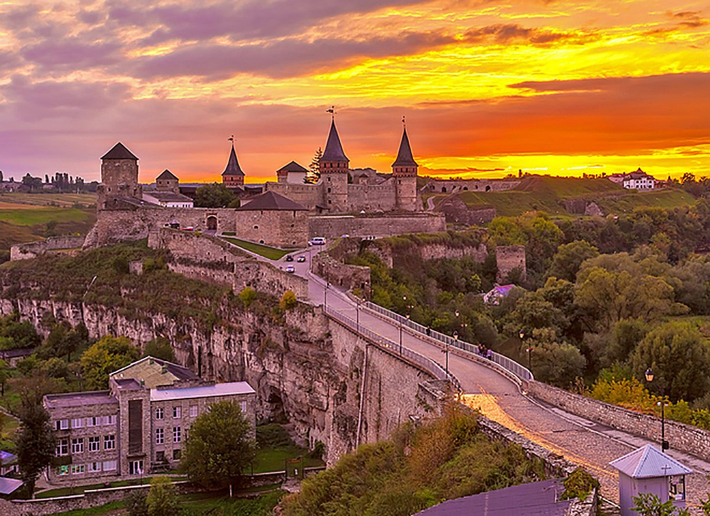
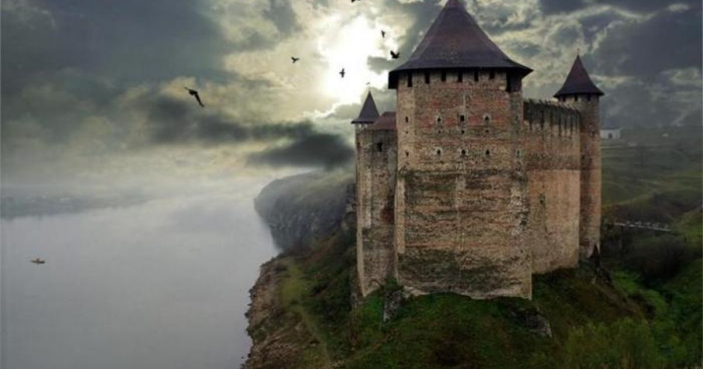

Ласкаво просимо!
Цей сайт містить інформацію про історичні пам’ятки та храми України.



На цьому сайті ви знайдете цікаві історичні будівлі України. Україна славиться унікальною архітектурною спадщиною, яка відображає її багатовікову історію. Величні храми, фортеці та замки стали символами різних епох і культур. Софія Київська лавра вражає своєю духовною значущістю та архітектурною довершеністю. Кам'янець-Подільська та Хотинська фортеці є свідками героїчної боротьби за незалежність. Кожна будівля зберігає таємниці минулого, що робить їх важливими культурними та туристичними об’єктами України.
Цей сайт містить інформацію про історичні пам’ятки та храми України.